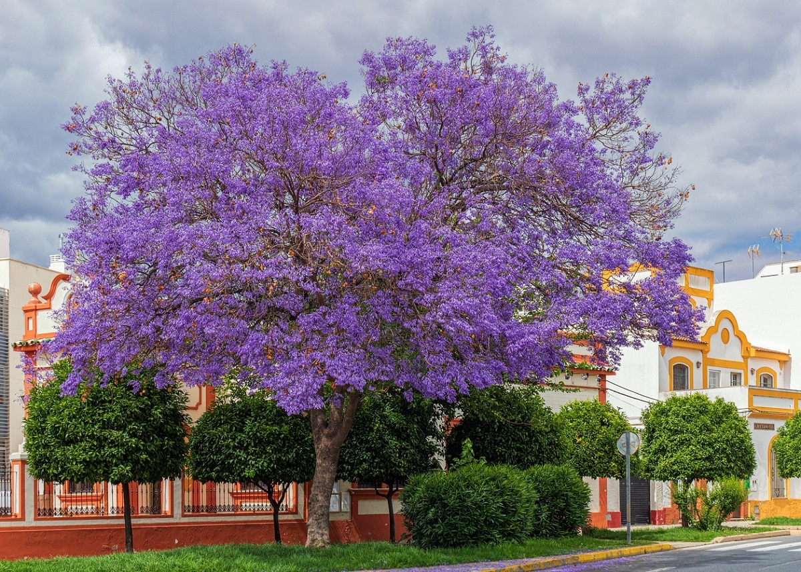
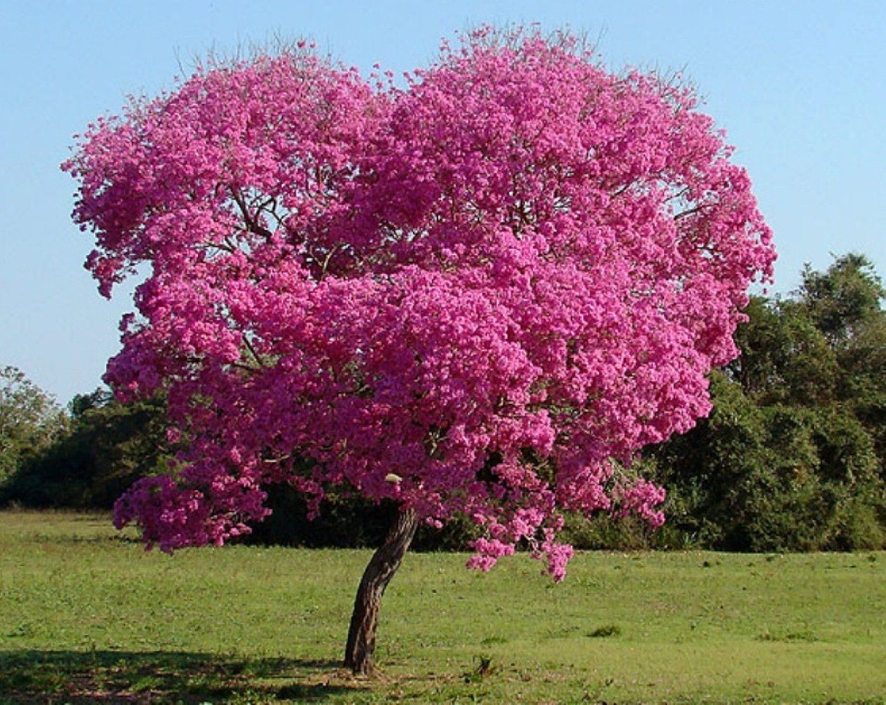
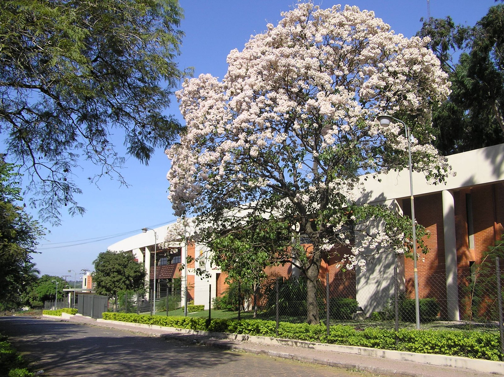
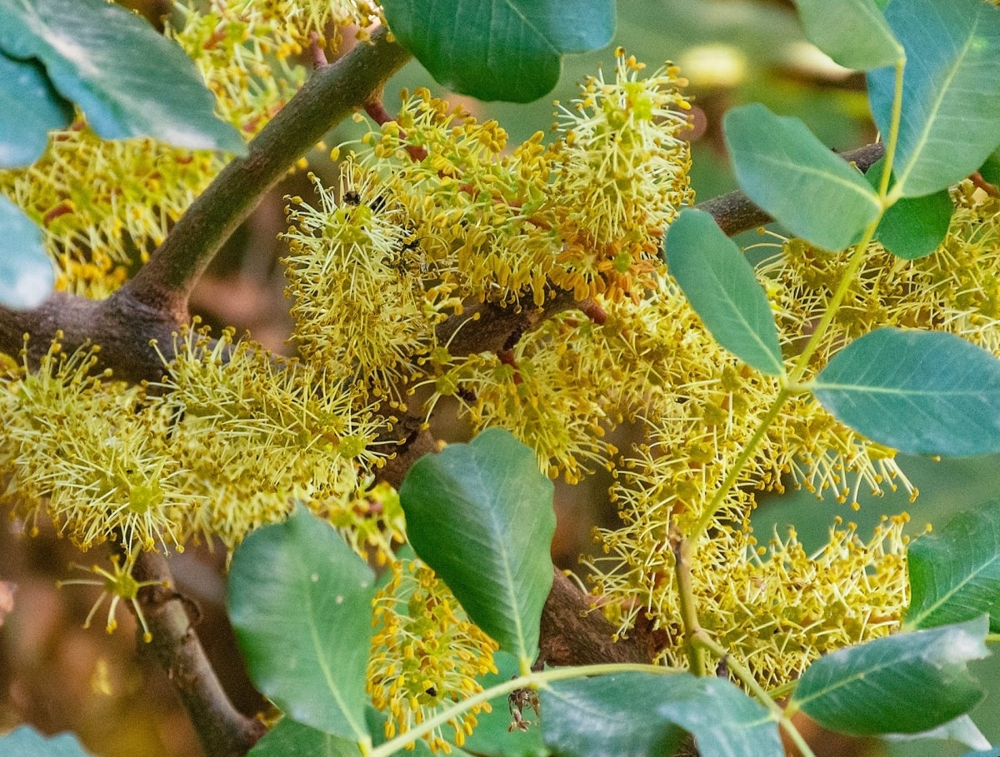
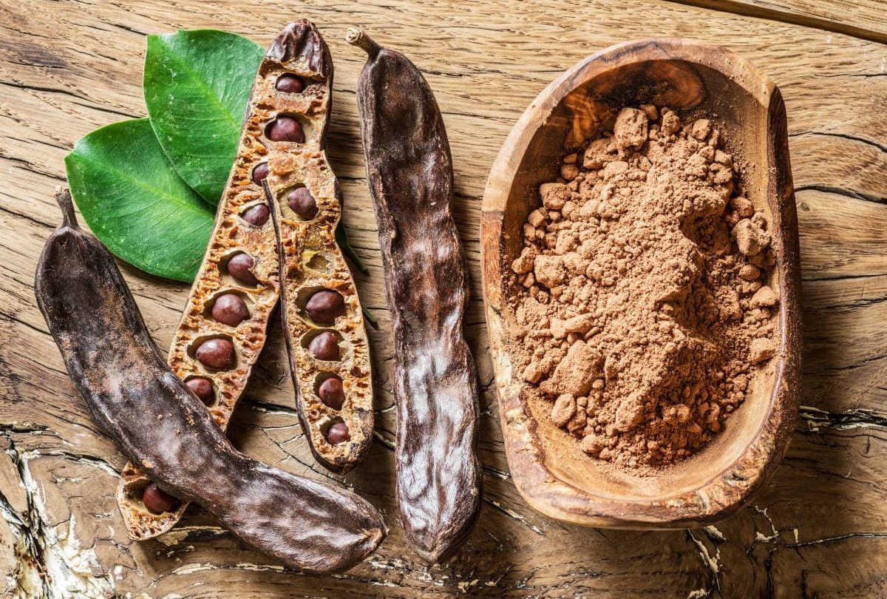

Bienvenidos a Plantas Argentinas
Descubrí la diversidad de plantas nativas de Argentina y aprendé sobre su importancia ecológica y cultural.
Catálogo de Plantas Nativas
Ceibo
Erythrina crista-galli
¿Dónde se encuentra?
El ceibo es nativo del noreste y centro-este de Argentina.
Es muy común en el Litoral (Corrientes y Entre Ríos),
en el Delta del Paraná y en zonas cercanas a ríos y humedales.
También crece en Uruguay y el sur de Brasil.
Es un árbol adaptado a suelos húmedos e incluso inundables.
Características generales
- Altura aproximada entre 5 y 10 metros.
- Tronco con espinas.
- Hojas verdes compuestas por tres folíolos.
Flores
Florece en primavera y verano. Sus flores son de color rojo intenso
y crecen agrupadas en racimos.
Son especialmente atractivas para aves como los picaflores.

Tipo de planta
- Árbol caducifolio (pierde sus hojas en invierno).
- Especie ornamental.
- Flor nacional de Argentina.
Importancia ecológica
El ceibo atrae polinizadores y es una especie clave en la restauración
de zonas ribereñas debido a su resistencia a la humedad y las inundaciones.
Jacarandá
Jacaranda mimosifolia
¿Dónde se encuentra?
El jacarandá es nativo del norte de Argentina, especialmente en
regiones subtropicales del NOA y NEA.
Actualmente se cultiva ampliamente como árbol ornamental en ciudades
como Buenos Aires, donde es un símbolo de la primavera.
Características generales
- Altura aproximada entre 8 y 15 metros.
- Copa amplia y redondeada.
- Hojas compuestas, finas y de aspecto plumoso.
- Tronco grisáceo que se vuelve más rugoso con el tiempo.
Flores
Florece principalmente en primavera, aunque puede presentar una segunda
floración a fines del verano.
Sus flores son de color violeta o lila, con forma de campana, y
suelen cubrir calles y veredas cuando caen.

Tipo de planta
- Árbol caducifolio (pierde sus hojas en invierno).
- Especie ornamental.
- Muy utilizado en arbolado urbano por su valor paisajístico.
Importancia ecológica
Atrae insectos polinizadores y contribuye a la biodiversidad urbana.
Es una especie ampliamente utilizada en espacios públicos debido a su
impacto visual y adaptabilidad a climas templados.
Lapacho
Handroanthus spp.
¿Dónde se encuentra?
El lapacho es nativo del norte y noreste de Argentina.
Se encuentra principalmente en provincias como Misiones,
Formosa, Chaco, Salta y Tucumán.
Crece en bosques y selvas subtropicales, aunque también
es muy utilizado como árbol ornamental en ciudades.
Características generales
- Altura entre 8 y 20 metros, según la especie.
- Tronco recto con corteza gruesa y agrietada.
- Madera muy dura y resistente.
- Copa amplia y vistosa.
Flores
Florece a fines del invierno o comienzos de la primavera,
muchas veces antes de que aparezcan las hojas.
Existen distintas variedades según el color de la flor:
- Lapacho rosado.

- Lapacho amarillo.

- Lapacho blanco.

Tipo de planta
- Árbol caducifolio.
- Especie ornamental y forestal.
- Madera de alto valor comercial.
Importancia ecológica
El lapacho atrae polinizadores como abejas y contribuye
a la biodiversidad en regiones subtropicales.
Es una especie muy valorada tanto por su belleza como
por la resistencia de su madera.
Algarrobo
Prosopis spp.
¿Dónde se encuentra?
El algarrobo es nativo de regiones áridas y semiáridas de Argentina.
Es muy común en el centro y norte del país, especialmente en
provincias como Córdoba, Santiago del Estero, La Rioja,
San Juan y Mendoza.
Se adapta a suelos secos y climas cálidos, siendo una especie
característica del bosque chaqueño.
Características generales
- Altura entre 6 y 15 metros.
- Copa amplia que proporciona abundante sombra.
- Tronco grueso y madera muy resistente.
- Raíces profundas que le permiten resistir sequías.
Flores
Florece en primavera. Sus flores son pequeñas, de color
amarillo verdoso y se agrupan en inflorescencias alargadas.

Frutos
Produce vainas conocidas como algarrobas, que contienen semillas
y una pulpa dulce utilizada tradicionalmente para elaborar harina,
bebidas y alimentos regionales.

Tipo de planta
- Árbol perenne o semi-caducifolio (según la especie).
- Especie forestal y ornamental.
- De gran valor ecológico y cultural.
Importancia ecológica
El algarrobo es fundamental en ecosistemas secos, ya que mejora
el suelo, ofrece sombra y alimento para animales, y resiste
condiciones climáticas extremas.